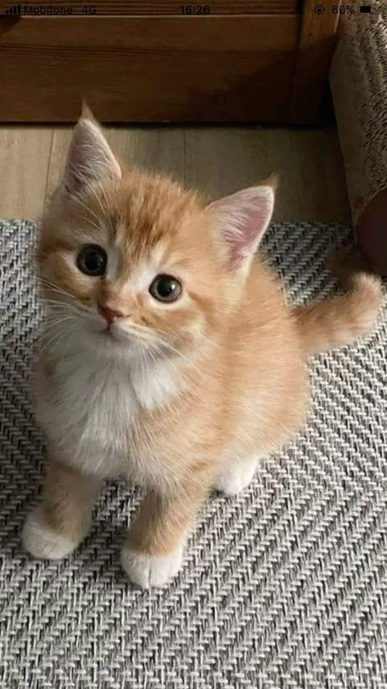

Animal shelters are crucial community resources that provide temporary homes, food, and medical care for lost, abandoned, and surrendered pets, acting as vital safe havens from streets and neglect, while also facilitating adoptions to give animals second chances and combat pet overpopulation by connecting them with loving families, though they often face challenges like overcrowding and limited resources.
In this spirit, the shelter is giving up some of its animals for adoption in an attempt to offer them loving homes that they were once deprived of.
\
Animals up for adoption.
1. Japanese spitz
The Japanese Spitz is a small to medium breed of dog of the Spitz type. There are varying standards around the world as to the ideal size of the breed, but they are always larger than their smaller cousins, the Pomeranian.
Height: 30 – 38 cm (Male, At the withers), 25 – 35 cm (Female)
Coat: Double coat
2. Fluffy Rabbits
Rabbits are mammals, which are warm blooded animals with backbones. They like to live in groups and dig tunnels under the ground to protect themselves. They are prey and have many predators that like to eat them. Rabbits are herbivores, which means they like to eat only plants.
3. Brown cat

A light brown cat, often described as having a cinnamon, tan, or fawn coat, offers a warm and gentle aesthetic that stands out from more common feline colors. While solid light brown is quite rare, this coloring is frequently seen in breeds like the Abyssinian, which boasts a ticked coat giving them a shimmering, sandy appearance. Others, such as light brown Siamese or Burmese variants, may display this color in a softer "chocolate point" or "champagne" shade, often accompanied by striking green or gold eyes. These, and similar shades of light brown tabby cats, are known for being highly affectionate, social, and sometimes possessing a "sassy" or high-energy personality that makes them engaging, active household companions.
<
4.Guinea pigs
Domesticated guinea pigs, descended from wild ancestors in the Andes, are kept as companions and for research, thriving in groups with plenty of space and specialized care for their teeth and nutritional needs.
For more info,kindly contact us through the following platforms:
.jpg)